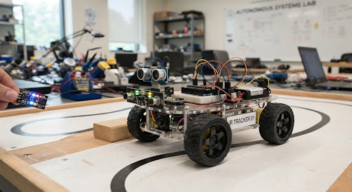

Arduino UNO R4 WiFi
บอร์ดควบคุมและเชื่อมต่อ Wi-Fi
PHYSICAL COMPUTING PROJECT
สำรวจด้วยเซนเซอร์ ส่งข้อมูลผ่าน Wi-Fi
ให้คุณเห็นสถานะของแต่ละช่องจอดได้สะดวกขึ้น

นำทางและตรวจระยะ
ประมวลผลสถานะช่องจอด
ส่งข้อมูลสถานะทั้งลาน
แสดงแต่ละช่องและจำนวนที่ว่าง
ABOUT THE PROJECT
ParkerWatcher คือระบบตรวจสอบช่องจอดรถอัตโนมัติ โดยใช้รถขนาดเล็กเคลื่อนที่ตามเส้นด้วยเซนเซอร์ IR เพื่อตรวจสอบช่องจอดแต่ละช่อง และใช้ Ultrasonic Sensor วัดระยะเพื่อตรวจว่าช่องจอดว่างหรือมีรถจอดอยู่
ข้อมูลสถานะถูกส่งผ่าน Wi-Fi และ MQTT ไปแสดงผลบนเว็บไซต์ ผู้ใช้สามารถดูตำแหน่งและสถานะของแต่ละช่อง รวมถึงจำนวนช่องจอดที่ว่างได้
เป้าหมายของระบบคือให้รถวนกลับมาตรวจสอบซ้ำตามเวลาที่กำหนด เพื่ออัปเดตสถานะให้เป็นปัจจุบัน
HOW IT WORKS
อ่านเซนเซอร์ IR เพื่อนำทางและระบุตำแหน่งช่องจอด
Ultrasonic วัดระยะและแปลงเป็นสถานะ มีรถ ว่าง หรือยังไม่ทราบ
เก็บ array ตาม A1, A2, … แล้วส่งครบทุกช่องผ่าน MQTT
อัปเดตแต่ละช่องและนับจำนวนที่ว่างเฉพาะค่า 0
[1, 0, null, 0]1 = มีรถ · 0 = ว่าง · null = ยังไม่ทราบ
THE HARDWARE
ส่วนประกอบที่ทำให้การสำรวจและส่งข้อมูลทำงานร่วมกัน
บอร์ดควบคุมและเชื่อมต่อ Wi-Fi
เซนเซอร์เดินตามเส้น จำนวน 2 ตัว
วัดระยะเพื่อตรวจสอบช่องจอด
ขับมอเตอร์และควบคุมการเคลื่อนที่
ขับเคลื่อนล้อทั้งสองด้าน
ล้อ แหล่งจ่ายไฟ และสายเชื่อมต่อ
OUR TEAM
68070095
68070120
68070163
68070165
68070188